palette_visualization.RmdThe colorspace provides several visualization functions for depicting one or more color palettes and their underlying properties. Color palettes can be visualized by:
swatchplot(): Color swatches.specplot(): Spectrum of HCL and/or RGB coordinates.hclplot(): Trajectories in HCL space projections.demoplot(): Illustrations of typical (and simplified) statistical graphics.The function swatchplot() is a convenience function for displaying collections of palettes that can be specified as lists or matrices of hex color codes. Essentially, the is just a call to the base graphics rect() function but with heuristics for choosing default labels, margins, spacings, borders, etc. These are selected to work well for hcl_palettes() and might need further tweaking in future versions.
As a first simple example, the properties of the three HCL axes are brought out:
swatchplot(
"Hue" = sequential_hcl(5, h = c(0, 300), c = c(60, 60), l = 65),
"Chroma" = sequential_hcl(5, h = 0, c = c(100, 0), l = 65, rev = TRUE, power = 1),
"Luminance" = sequential_hcl(5, h = 260, c = c(25, 25), l = c(25, 90), rev = TRUE, power = 1),
off = 0
)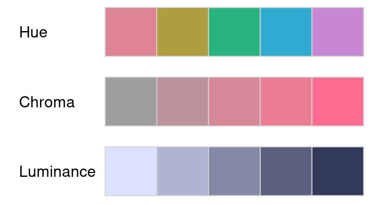
As a somewhat more complex example a swatchplot() is created with three matrices of sequential color palettes of blues, purples, reds, and greens. For all palettes, luminance increases monotonically to yield a proper sequential palette. However, the hue and chroma handling is somewhat different to emphasize different parts of the palette.
bprg <- c("Blues", "Purples", "Reds", "Greens")
swatchplot(
"Single-hue" = t(sapply(paste(bprg, 2), sequential_hcl, n = 7)),
"Single-hue (advanced)" = t(sapply(paste(bprg, 3), sequential_hcl, n = 7)),
"Multi-hue (advanced)" = t(sapply(bprg, sequential_hcl, n = 7)),
nrow = 5
)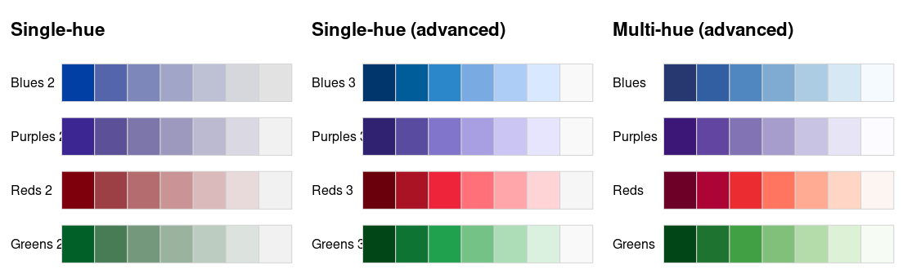
As the properties of a palette in terms of the perceptual dimensions hue, chroma, and luminance are not always clear from looking just at color swatches or (statistical) graphics based on these palettes, the specplot() function provides an explicit display for the HCL coordinates associated with a palette. This can bring out clearly various aspects, e.g., whether hue is constant, chroma is monotonic or triangular, and whether luminance is approximately constant (as in many qualitative palettes), monotonic (as in sequential palettes), or diverging.
The function first transforms a given color palette to their HCL (polarLUV()) coordinates. As the hues for low-chroma colors are not (or only poorly) identified, by default a smoothing is applied to the hues. Also, to avoid jumps from 0 to 360 or vice versa, the hue coordinates are shifted suitably.
By default, the resulting HCL spectrum is visualized by a simple line plot:
Additionally, a color swatch for the palette is included. Optionally, a second spectrum for the corresponding RGB palettes can be included. However, this is usually just of interest for palettes created in RGB space (or simple transformations thereof).
The illustrations below show how basic qualitative, sequential, and diverging palettes are constructed in HCL space. In the qualitative “Set 2” palette below, the hue traverses the entire color “wheel” (from 0 to 360 degrees) while keeping chroma and luminance (almost) constant (C = 60 and L = 70).
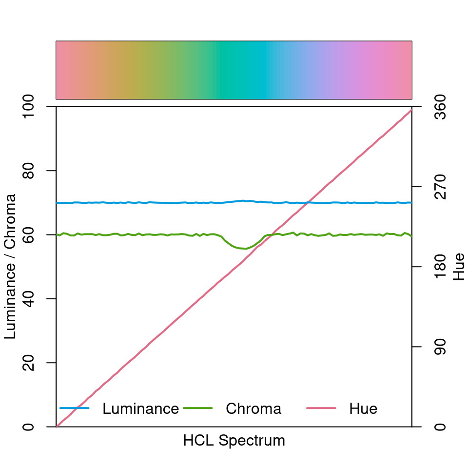
Note that due to the restrictions of the HCL color space, some of the green/blue colors have a slightly smaller maximum chroma resulting in a small dip in the chroma curve. This is fixed automatically (by default) and is hardly noticable in visualization, though.
The sequential “Blues 2” palette below employs a single hue (H = 260) and a monotonically increasing luminance trajectory (from dark to light). Chroma simply decreases monotonically along with increasing luminance.
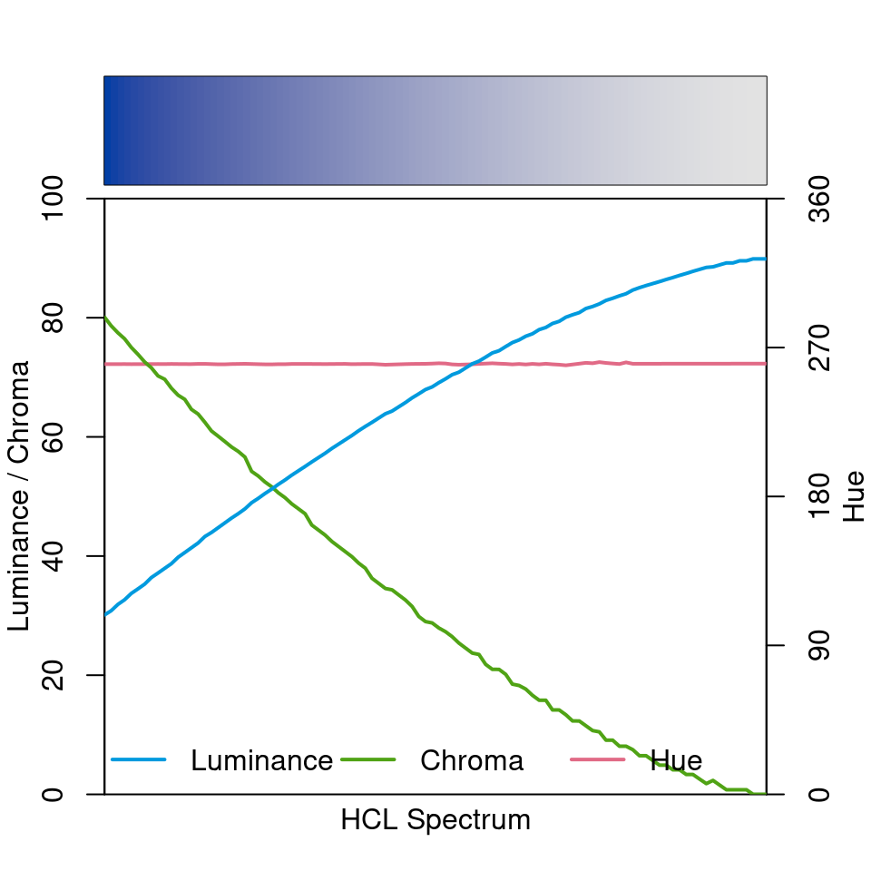
Note that there is a little kink in the hue curve on the right. However, this is a mere artifact from the hue being poorly identified at very low chroma values.
Finally, the diverging “Blue-Red” palette is depicted below. It simply combines a blue and a red sequential single-hue palette (as “Blues 2” above). Hue is constant in each “arm” of the palette and the chroma/luminance trajectories are balanced between both arms. In the center the palette passes through a light gray (with zero chroma) as the neutral value.
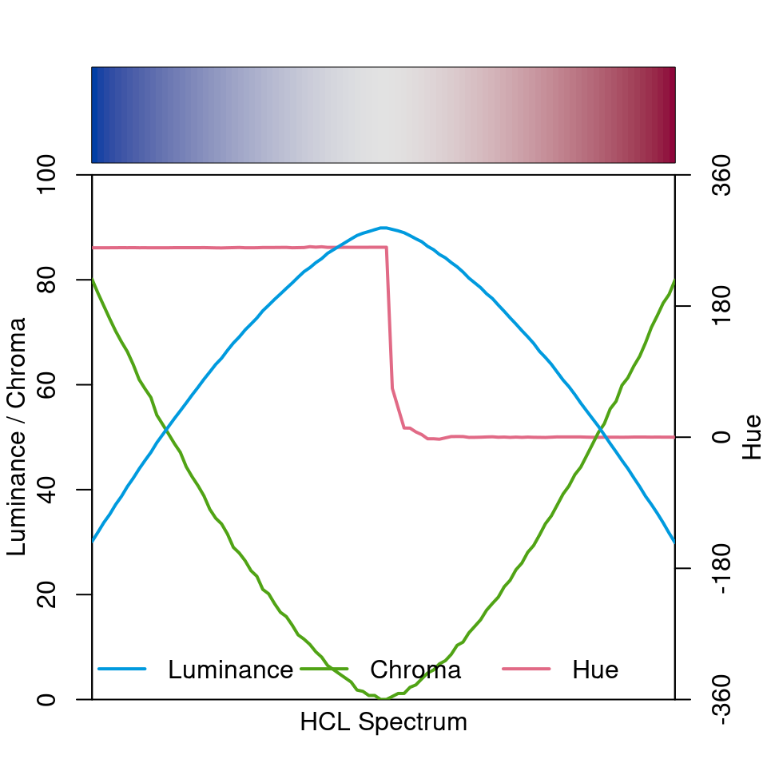
To contrast these well-balanced HCL-based palettes with a poorly-balanced palette, the spectrum of the (in)famous RGB rainbow palette is depicted in both RGB and HCL space.
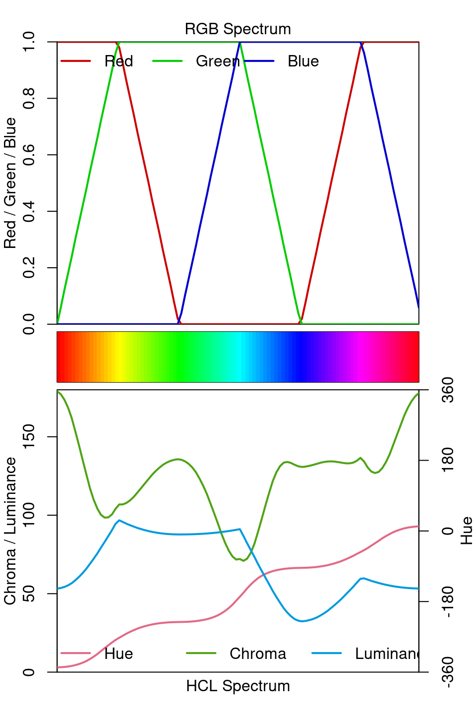
The RGB spectrum shows that the trajectories are quite simple in RGB space but the HCL spectrum shows that the result is very unbalanced with shifts and kinks in both chroma and (more importantly) luminance. This is why this palette is not suitable for encoding underlying data in statistical graphics. See also the related discussion of color vision deficiency.
While the specplot() function above works well for bringing out the HCL coordinates associated with a given palette, it does not bring out how the palette fits into the HCL space. For example, it is not so clear whether high chroma values are close to the maximum possible for a given hue. Thus, it cannot be judged so easily how the parameters of the hue, chroma, and luminance trajectories can be modified to obtain another palette.
Therefore, the hclplot() is another visualization of the HCL coordinates associated with a palette. It does so by collapsing over one of the coordinates (either the hue H or the luminance L) and displays a heatmap of colors combining the remaining two dimensions. The coordinates for the given color palette are highlighted to bring out its trajectory. In case the hue is really fixed (as in single-hue sequential palettes) or the luminance is really fixed (as in the qualitative palettes), collapsing is straightforward. However, when the coordinate that is collapsed over is actually not constant in the palette, a simple bivariate linear model is used to capture how the collapsed coordinate varies along with the two displayed coordinates.
The function hclplot() has been designed to work well with the hcl_palettes() in this package. While it is possible to apply it to other color palettes as well, the results might look weird or confusing if these palettes are constructed very differently (e.g., as in the highly saturated base R palettes). To infer what kind of projection it should use hclplot() checks whether luminance is approximately constant (qualitative), monotonic (sequential) or triangular (diverging).
Thus, for qualitative palettes - where luminance and chroma are fixed - the varying hue is displayed in a projection onto the hue-chroma plane at a given fixed luminance:
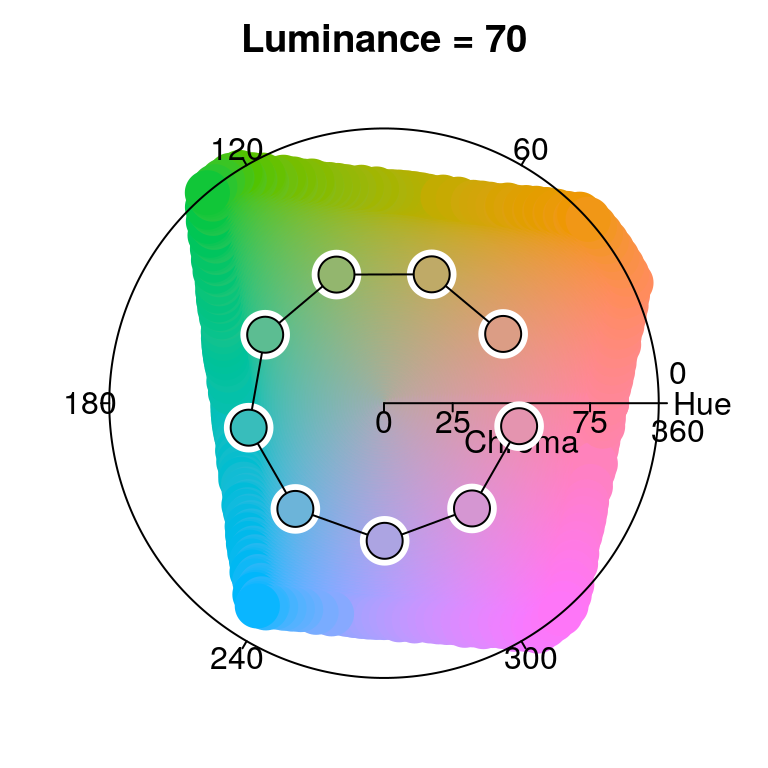
The display below compares three single-hue sequential palettes by projection to the luminance-chroma plane for the given fixed hue. In the left panel the hue 260 is used with a simple linear chroma trajectory. The other two panels employ a triangular chroma trajectory for hue 245, either with a piecewise-linear (middle) or power-transformed (right) trajectory.
par(mfrow = c(1, 3))
hclplot(sequential_hcl(7, h = 260, c = 80, l = c(35, 95), power = 1))
hclplot(sequential_hcl(7, h = 245, c = c(40, 75, 0), l = c(30, 95), power = 1))
hclplot(sequential_hcl(7, h = 245, c = c(40, 75, 0), l = c(30, 95), power = c(0.8, 1.4)))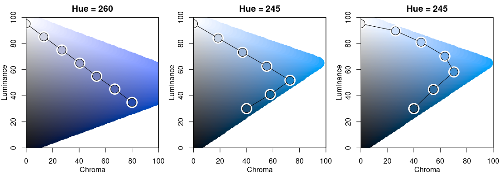 Note that for H = 260 it is possible to go to dark colors (= low luminance) with high chroma while this is not possible to the same extent for H = 245. Hence, chroma has to be decreased when proceeding to the dark low-luminance colors.
Finally, the display below compares two multi-hue sequential palettes along with a diverging palette.
par(mfrow = c(1, 3))
hclplot(sequential_hcl(7, h = c(260, 220), c = c(50, 75, 0), l = c(30, 95), power = 1))
hclplot(sequential_hcl(7, h = c(260, 60), c = 60, l = c(40, 95), power = 1))
hclplot(diverging_hcl(7, h = c(260, 0), c = 80, l = c(35, 95), power = 1))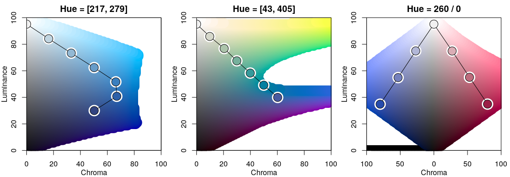
The multi-hue palette on the left employs a small hue range, resulting in a palette of “blues” just with slightly more distinction of the middle colors in the palette. In contrast, the multi-hue “blue-yellow” palette in the middle panel uses a large hue range, resulting in more color contrasts throughout the palette. Finally, the balanced diverging palette in the right panel is constructed from two simple single-hue sequential palettes (for hues 260/blue and 0/red) that are completely balanced between the two “arms” of the palette.
To demonstrate how different kinds of color palettes work in different kinds of statistical displays, demoplot() provides a simple convenience interface to some base graphics with (mostly artificial) data sets. All types of demos can deal with arbitrarily many colors. However, some displays are much more suitable for a low number of colors (e.g., the pie chart) while others work better with more colors (e.g., the heatmap).
First, all built-in demos are displayed with the same heat colors palette: sequential_hcl(5, "Heat").
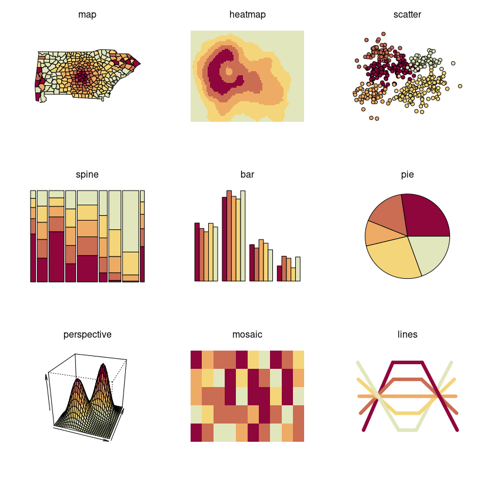
Qualitative palettes: Light pastel colors typically work better for shading areas (pie, left) while darker and more colorful palettes are usually preferred for points (center) or lines (right).
par(mfrow = c(1, 3))
demoplot(qualitative_hcl(4, "Pastel 1"), type = "pie")
demoplot(qualitative_hcl(4, "Set 2"), type = "scatter")
demoplot(qualitative_hcl(4, "Dark 3"), type = "lines")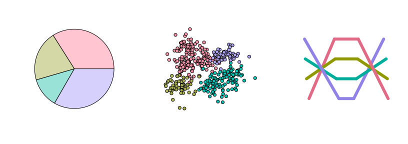
Sequential palettes: Heatmaps (left) or perspective plots (right) often employ almost continuous gradients with strong luminance contrasts. In contrast, when only a few ordered categories are to be displayed (e.g., in a spine plot, right) more colorful sequential palettes like the viridis palette can be useful.
par(mfrow = c(1, 3))
demoplot(sequential_hcl(99, "Purple-Blue"), type = "heatmap")
demoplot(sequential_hcl(99, "Reds"), type = "perspective")
demoplot(sequential_hcl( 4, "Viridis"), type = "spine")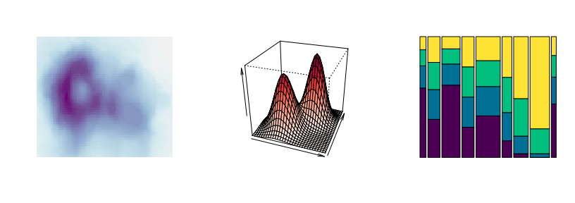
Diverging palettes: In some displays (such as the map, left), it is useful to employ an almost continuous gradient with strong luminance contrast to bring out the extremes. Here, this contrast is amplified by a larger power transformation emphasizing the extremes even further. In contrast, when fewer colors are needed more colorful palettes with lower luminance contrasts can be desired. This is exemplified by a mosaic (middle) and bar plot (right).
par(mfrow = c(1, 3))
demoplot(diverging_hcl(99, "Tropic", power = 2.5), type = "map")
demoplot(diverging_hcl( 5, "Green-Orange"), type = "mosaic")
demoplot(diverging_hcl( 5, "Blue-Red 2"), type = "bar")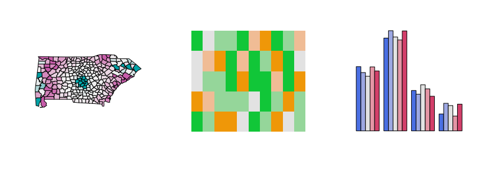
All displays above focused on palettes designed for light/white backgrounds. Therefore, to conclude, some palettes are highlighted that work well on dark/black backgrounds.
par(mfrow = c(2, 3), bg = "black")
demoplot(sequential_hcl(9, "Oslo"), "heatmap")
demoplot(sequential_hcl(9, "Turku"), "heatmap")
demoplot(sequential_hcl(9, "Inferno", rev = TRUE), "heatmap")
demoplot(qualitative_hcl(9, "Set 2"), "lines")
demoplot(diverging_hcl(9, "Berlin"), "scatter")
demoplot(diverging_hcl(9, "Cyan-Magenta", l2 = 20), "lines")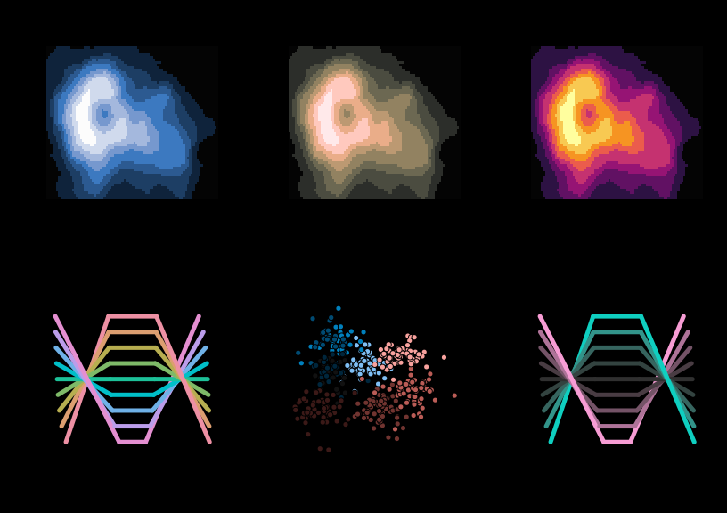